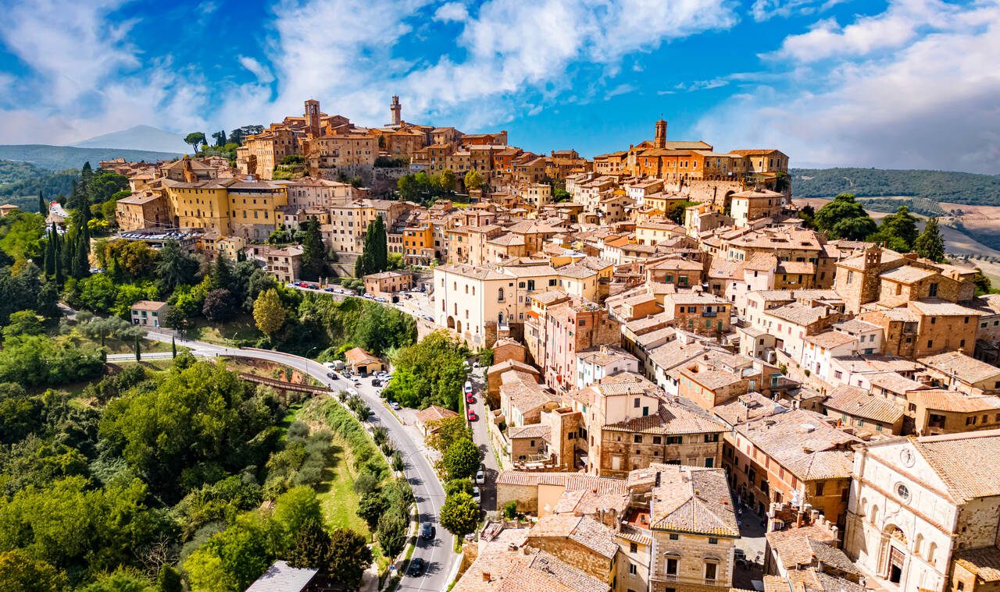
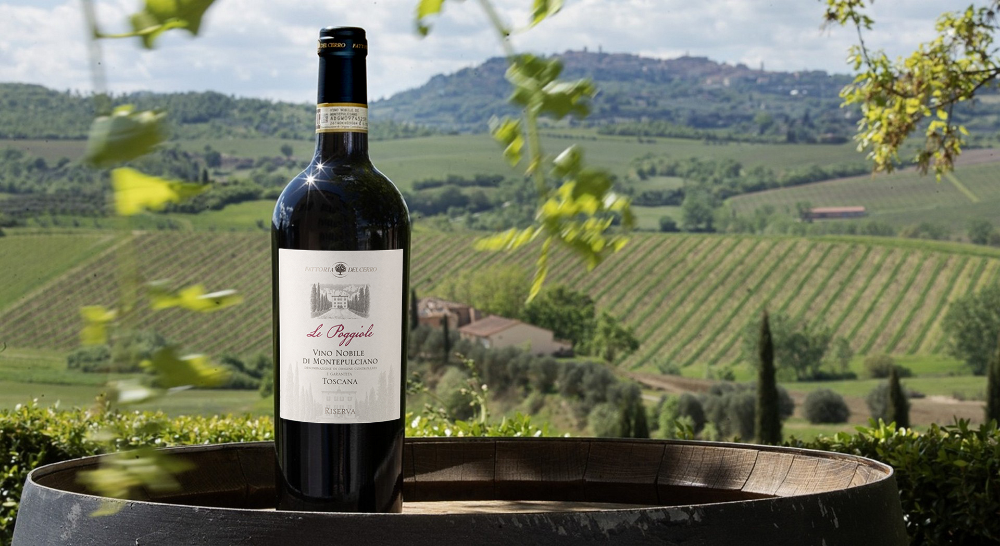
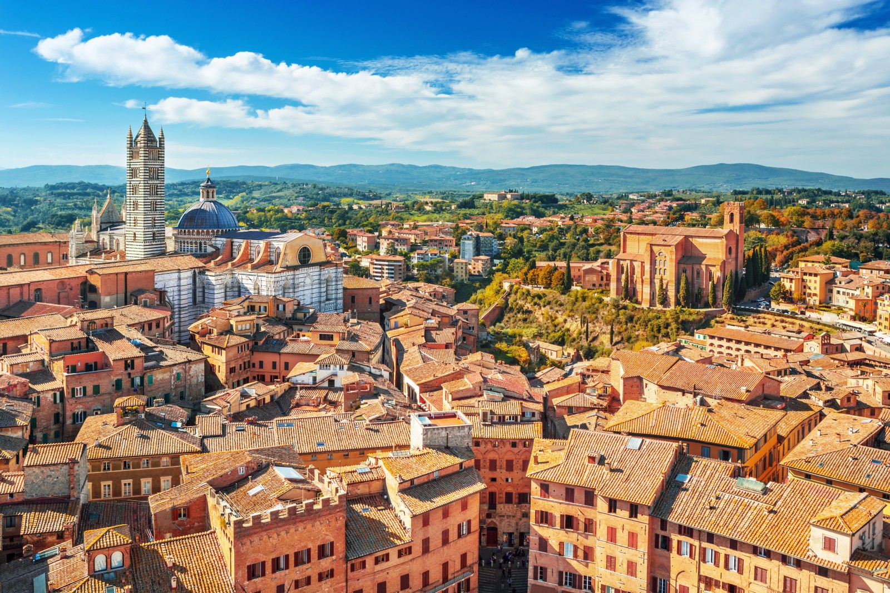
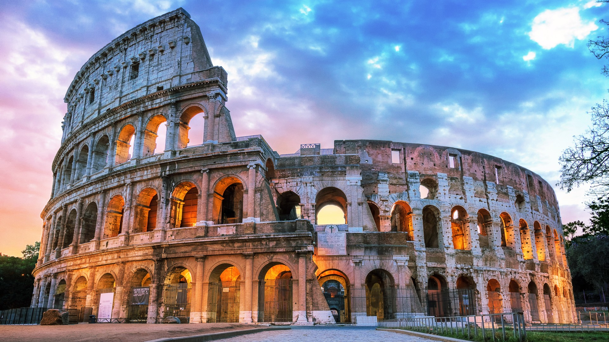
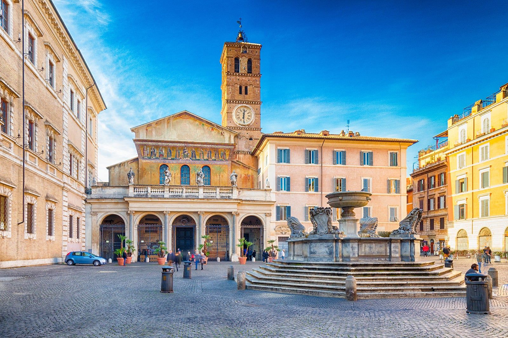
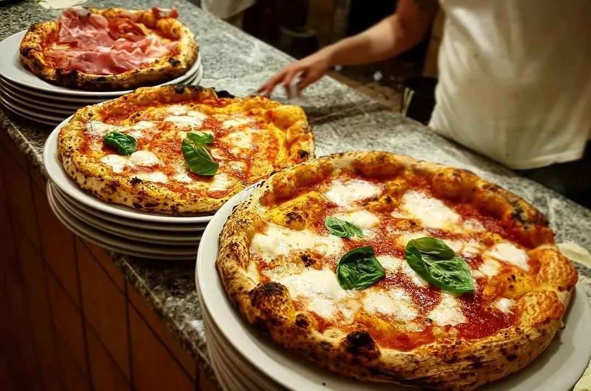

June 7–14, 2026 · Rome & Tuscany · 8 days of Italian magic
We land in Rome and settle in before the Tuscany loop begins. Use this evening to shake off the flight, enjoy your first Roman meal, and rest up for Day 1.

Pick up your rental car and begin your journey north through the Italian countryside.
A stunning Gothic masterpiece perched on a volcanic cliff, featuring incredible frescoes and a breathtaking facade.
Arrive in this charming hilltop town famous for its Vino Nobile wine and Renaissance architecture.

A perfectly planned Renaissance town and UNESCO World Heritage site, famous for its pecorino cheese.
Home to the legendary Brunello di Montalcino, one of Italy's finest wines.
Return to your base for a magical Tuscan sunset and dinner.

Explore one of Italy's most beautiful medieval cities, famous for its shell-shaped Piazza del Campo.
Famous for its medieval towers that create a unique skyline, this UNESCO site is a step back in time.
Return to Montepulciano for your last evening in the Tuscan hills.

Check out from Montepulciano and enjoy one last Tuscan breakfast.
Scenic 2.5-hour drive back to the Eternal City. Return your rental car.
Return to Rome and take a magical sunset walk around the ancient monuments.

Walk through the heart of ancient Rome where emperors once ruled.
Wander through narrow cobblestone streets in Rome's most authentic and bohemian neighborhood.
Experience the magic of Rome's most famous fountain illuminated at night.

Visit the world's smallest country and home to some of humanity's greatest artistic treasures.
Savor the last hours in the Eternal City before departure.
Head to the airport for your departure, carrying memories of an unforgettable Italian journey.
After Day 6 in the city and at the airport, our flights home leave from Rome. Same gateways we arrived through—just with fuller hearts and heavier suitcases.